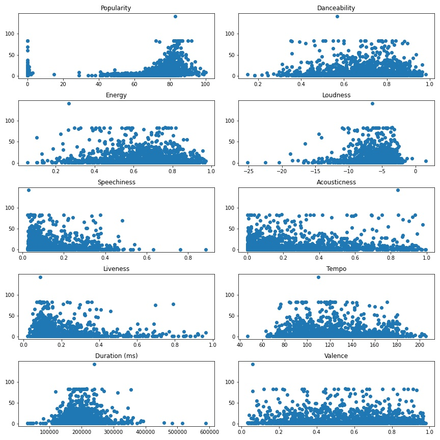
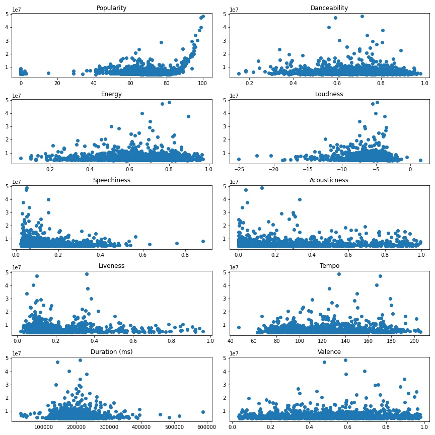

Data Visualizations

The data contains a list of the songs that have reached the Spotify Top 200 Weekly (Global) Chart in 2020 and 2021. Included in the data are metrics regarding how popular, danceable, loud, etc the songs are as well as the artist and genre. We cleaned the data to remove songs with blanks and summarized the genres into a single general category. Once completed we ended up with 9 categories for the 1,470 songs in our cleaned DataFrame.
With this data, we want to see if a song’s metrics (popularity, danceability, etc) can predict the number of times the song charted or the number of streams.
Our first idea was to try and predict how many times a song charted based on Spotify metrics of songs, so we started looking for simple linear relationships between the number times charted, and each individual feature. As shown in the image "Number of Times Charted" graphs, there was not a clear linear relationship between any of the variables from the plots. So we decided that predicting streams might yield better results and started by checking their scatter plots. As the "Streams" plots show, none of the plots looked particularly promising. That was supported by the correlation heatmap of all variables, above. The highest positive correlation for Streams (besides itself) was Popularity, which had a r^2 of 0.14 that is in the middle of "None or very weak". The highest negative correlation for Streams was Highest Charting Position, with a r^2 of -0.3 that is on the edge of "very weak" and "weak".
At this point we determined that a different type of model was needed.
Number of Times Charted
Streams
Linear Regression models did not show any linear relationship between Streams and the Feature dataset. Random Forest Regression uses decision trees, averaging the sample data to improve predictive accuracy and control over-fitting. Our data was split into training and testing samples at a 75% and 25% split. The data was also cleaned by dropping more unnecessary columns and encoding the Genre category using LabelEncoder to change the values from Categories to integers. After the data was pre-processed, we ran the Random Forest Regression model using SciKit-Learn RandomForestRegressor. The number of trees in the forest (n_estimators) was set to 50. The model was also tested at 100 and 150 trees, but did not improve performance. This model showed our strongest accuracy with an R2 score of .83. This indicated that the model fit well with a score very close to 1.0. Our output also showed a strong similarity for Actual Streams and Predicted Streams. Therefore, we determined we could use this model to predict the number of Streams based on the data features.
Our best model was able to explain over 80% of the variability in the data, which vastly outperformed the Linear Regression, but still has some room to improve. One way to improve it would be to look closer at outliers (possibly remove songs with over 3M streams) and their impact on the model. Another way is to use more advanced machine learning techniques that were outside the scope of the course. An example is hyperparameter tuning.
It's worth noting that the data we used was from 4 months, and some of the values could have changed. We decided that since the Spotify metrics of a song didn't change over time (the tempo is the tempo, etc) that our data was valid to analyze. The number of streams, artist followers, and number times charted have all likely changed over the past 4 months, but still represent an accurate picture.